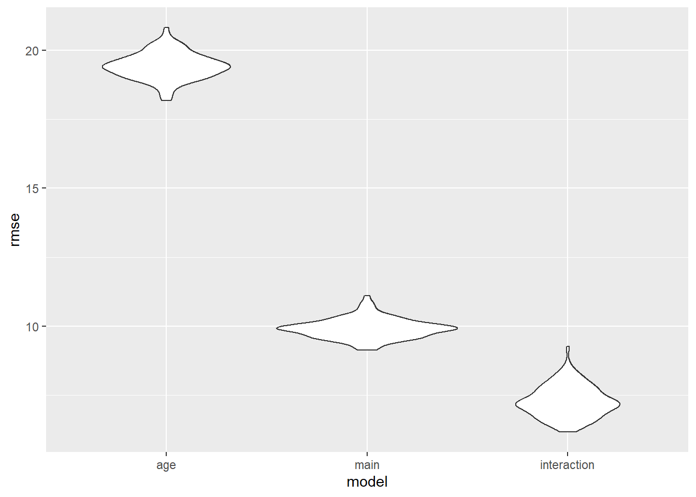

Hypothesis Testing
library(tidyverse)
library(modelr)
library(mgcv)
According to the tidy dataset, several geographical and demographic
factors were measured across time, and may have a direct influence on
the overall vaccination count in NYC. We conducted chi-square tests to
examine individual association of borough, race, age, and gender in
determining the vaccination count in NYC. We then built statistical
models between selected geographical and demographic factors and the
primary series vaccination counts in NYC.
stratified =
read_csv("https://raw.githubusercontent.com/Serena-Wang/p8105_covid_vaccinations/main/Data/coverage_by_demo_full.csv") %>%
janitor::clean_names() %>%
select(date, population, group, subgroup, count_fully_cumulative, pop_denominator ) %>%
drop_na()
knitr::kable(head(stratified), digits = 3)
| 2022-11-10 |
Children (0-17) |
Age |
’0-4 |
23081 |
523718 |
| 2022-11-10 |
Children (0-17) |
Age |
’5-12 |
375933 |
747560 |
| 2022-11-10 |
Children (0-17) |
Age |
’13-17 |
356982 |
432840 |
| 2022-11-10 |
Children (0-17) |
Borough |
Citywide |
755996 |
1704118 |
| 2022-11-10 |
Children (0-17) |
Borough |
Bronx |
146761 |
347020 |
| 2022-11-10 |
Children (0-17) |
Borough |
Brooklyn |
212484 |
575063 |
unstratified =
read_csv("https://raw.githubusercontent.com/Serena-Wang/p8105_covid_vaccinations/main/Data/coverage_boro_demo_full.csv") %>%
janitor::clean_names() %>%
select(age_group, race_ethnicity, city_count_fully_cumulative) %>%
filter(
!age_group %in% c("Boroughwide", "All ages", "65+", "13-17", "18-44", "45-64")
)
knitr::kable(head(unstratified), digits = 3)
| ’0-4 |
Asian/NHPI |
5847 |
| ’0-4 |
Black |
1079 |
| ’0-4 |
Hispanic/Latino |
2147 |
| ’0-4 |
White |
12491 |
| ’5-12 |
Asian/NHPI |
96874 |
| ’5-12 |
Black |
61858 |
Borough
First, we want to see whether the COVID vaccination rate is
consistent across different parts of NYC. So we categorized people by
borough. We predicted that there is no difference in vaccination rate in
NYC across the six boroughs. We will perform the proportion test to
verify our assumption.
H0: the fully vaccination rate is the same across all boroughs.
H1: the fully vaccination rate is not same across all boroughs.
demo_boro =
stratified %>%
filter(group == "Borough",
date == max(date),
population == "All ages") %>%
select(-group, -date, -population) %>%
group_by(subgroup) %>%
summarise(
x = count_fully_cumulative,
n = pop_denominator) %>%
filter(subgroup != "Citywide") %>%
select(-subgroup) %>%
data.matrix()
rownames(demo_boro) = c("Bronx", "Brooklyn", "Manhattan", "Queens", "Staten Island")
knitr::kable(demo_boro, digits = 3)
| Bronx |
1083678 |
1418208 |
| Brooklyn |
1877156 |
2559901 |
| Manhattan |
1382884 |
1628706 |
| Queens |
1957412 |
2253857 |
| Staten Island |
362297 |
476143 |
prop.test(as.data.frame(demo_boro)$x, as.data.frame(demo_boro)$n)
##
## 5-sample test for equality of proportions without continuity correction
##
## data: as.data.frame(demo_boro)$x out of as.data.frame(demo_boro)$n
## X-squared = 177205, df = 4, p-value < 2.2e-16
## alternative hypothesis: two.sided
## sample estimates:
## prop 1 prop 2 prop 3 prop 4 prop 5
## 0.7641178 0.7332924 0.8490691 0.8684721 0.7608996
Conclusion: The p-value is much smaller than the critical value alpha
= 0.5, so we could reject the null hypothesis and conclude that the
fully vaccinated rate is different by geographical locations in NYC.
Race
Second, we want to examine whether the COVID vaccination rate is the
same across different race group in NYC so we stratified people by their
races. We predicted that there is no difference in vaccination rate in
NYC across the races.
H0: the fully vaccination rate is the same across all races
H1: the fully vaccination rate is not same across all races.
demo_race =
stratified %>%
filter(group == "Race/ethnicity",
date == max(date),
population == "All ages") %>%
select(-group) %>%
group_by(subgroup) %>%
summarise(
x = count_fully_cumulative,
n = pop_denominator) %>%
filter(!subgroup %in% c( "Native American/Alaska Native", "Other", "Unknown")) %>%
select(-subgroup) %>%
data.matrix()
rownames(demo_race) = c("Asian", "Black", "Hispanic/Latino", "Multiracial","White")
knitr::kable(demo_race, digit = 3)
| Asian |
1223600 |
1233643 |
| Black |
1130382 |
1825847 |
| Hispanic/Latino |
1808262 |
2423589 |
| Multiracial |
9874 |
152897 |
| White |
1731189 |
2681975 |
prop.test(as.data.frame(demo_race)$x, as.data.frame(demo_race)$n)
##
## 5-sample test for equality of proportions without continuity correction
##
## data: as.data.frame(demo_race)$x out of as.data.frame(demo_race)$n
## X-squared = 927591, df = 4, p-value < 2.2e-16
## alternative hypothesis: two.sided
## sample estimates:
## prop 1 prop 2 prop 3 prop 4 prop 5
## 0.99185907 0.61910007 0.74610918 0.06457942 0.64549036
Conclusion: The p-value is much smaller than the critical value alpha
= 0.5, so we could reject the null hypothesis and conclude that the
fully vaccinated rate is different by races in NYC.
Sex
Then, we want to test whether the COVID vaccination rate is constant
between male and female population in NYC so we grouped people by their
gender. We predicted that there is no difference in vaccination rate in
NYC across the gender.
H0: the fully vaccination rate is the same for male and female.
H1: the fully vaccination rate is not same for male and female.
demo_sex =
stratified %>%
filter(group == "Sex",
date == max(date),
population == "All ages") %>%
select(-group) %>%
group_by(subgroup) %>%
summarise(
x = count_fully_cumulative,
n = pop_denominator) %>%
filter(!subgroup %in% c("Other", "Prefer not to answer","Unknown")) %>%
select(-subgroup) %>%
data.matrix()
rownames(demo_sex) = c("Female", "Male")
knitr::kable(demo_sex, digit = 3)
| Female |
3490394 |
4358377 |
| Male |
3122712 |
3978438 |
prop.test(as.data.frame(demo_sex)$x, as.data.frame(demo_sex)$n)
##
## 2-sample test for equality of proportions with continuity correction
##
## data: as.data.frame(demo_sex)$x out of as.data.frame(demo_sex)$n
## X-squared = 3221.3, df = 1, p-value < 2.2e-16
## alternative hypothesis: two.sided
## 95 percent confidence interval:
## 0.01538691 0.01648937
## sample estimates:
## prop 1 prop 2
## 0.8008472 0.7849091
Conclusion: The p-value is much smaller than the critical value alpha
= 0.5, so we could reject the null hypothesis and conclude that the
fully vaccinated rate is different by gender in NYC.
age
Last, we want to test whether the COVID vaccination rate is the same
across different age groups in NYC so we grouped people by their ages.
We predicted that there is no difference in vaccination rate in NYC
across their ages.
H0: the fully vaccination rate is the same for different age
groups.
H1: the fully vaccination rate is not same for different age
groups.
demo_age =
stratified %>%
filter(
group == "Age",
date == max(date),
population == "All ages",
!subgroup %in% c("'0-4", "'5-12", "'13-17")) %>%
select(-group) %>%
group_by(subgroup) %>%
summarise(
x = count_fully_cumulative,
n = pop_denominator) %>%
select(-subgroup) %>%
data.matrix()
rownames(demo_age) = c("0-17", "18-24", "25-34", "35-44", "45-54", "55-64", "65-74", "75-84", "85+")
knitr::kable(demo_age, digits = 3)
| 0-17 |
755996 |
1704118 |
| 18-24 |
636306 |
704673 |
| 25-34 |
1245178 |
1483699 |
| 35-44 |
1063130 |
1136906 |
| 45-54 |
952463 |
1028087 |
| 55-64 |
934623 |
998927 |
| 65-74 |
652936 |
718795 |
| 75-84 |
307432 |
382672 |
| 85+ |
115363 |
178938 |
prop.test(as.data.frame(demo_age)$x, as.data.frame(demo_age)$n)
##
## 9-sample test for equality of proportions without continuity correction
##
## data: as.data.frame(demo_age)$x out of as.data.frame(demo_age)$n
## X-squared = 1835678, df = 8, p-value < 2.2e-16
## alternative hypothesis: two.sided
## sample estimates:
## prop 1 prop 2 prop 3 prop 4 prop 5 prop 6 prop 7 prop 8
## 0.4436289 0.9029805 0.8392390 0.9351081 0.9264420 0.9356269 0.9083758 0.8033825
## prop 9
## 0.6447093
Conclusion: The p-value is much smaller than the critical value alpha
= 0.5, so we could reject the null hypothesis and conclude that the
fully vaccinated rate is different by age groups in NYC.
Model Fitting
We propose 3 models for prediction based on previous analysis &
data availability:
Linear Model of city_perc_fully ~ age_group
Linear Model of city_perc_fully ~ age_group +
race_ethnicity
Linear Model of city_perc_fully ~ age_group + race_ethnicity +
age_group * race_ethnicity, assuming that there are interaction
Age Group Model
Age group model is a simple linear model that contains only the most
significant predictor: age of the NYC residents. Age predictor has five
levels: 5-12, 13-17, 18-44, 45-64 and 65+.
fit_lm_age = lm(city_perc_fully ~ age_group, data = unstratified )
fit_lm_age %>% broom::tidy() %>% knitr::kable(digits = 2)
| (Intercept) |
2.50 |
1.77 |
1.41 |
0.16 |
| age_group’13-17 |
73.06 |
1.88 |
38.76 |
0.00 |
| age_group’18-44 |
74.81 |
1.88 |
39.70 |
0.00 |
| age_group’45-64 |
79.41 |
1.88 |
42.14 |
0.00 |
| age_group’5-12 |
42.17 |
1.88 |
22.37 |
0.00 |
| age_group’65+ |
73.94 |
1.88 |
39.23 |
0.00 |
Main Effect Model
Main effect model contains is a multiple linear regression model with
two predictors: age and race/ethnicity. Age predictor has five levels:
5-12, 13-17, 18-44, 45-64 and 65+. And race group has three levels:
Black, White, and Hispanic/Latino.
fit_lm_main = lm(city_perc_fully ~ age_group + race_ethnicity,
data = unstratified )
fit_lm_main %>% broom::tidy() %>% knitr::kable(digits = 2)
| (Intercept) |
29.83 |
0.94 |
31.78 |
0 |
| age_group’13-17 |
73.06 |
0.96 |
75.93 |
0 |
| age_group’18-44 |
74.81 |
0.96 |
77.76 |
0 |
| age_group’45-64 |
79.41 |
0.96 |
82.54 |
0 |
| age_group’5-12 |
42.17 |
0.96 |
43.83 |
0 |
| age_group’65+ |
73.94 |
0.96 |
76.85 |
0 |
| race_ethnicityBlack |
-41.28 |
0.41 |
-100.96 |
0 |
| race_ethnicityHispanic/Latino |
-27.57 |
0.41 |
-67.43 |
0 |
| race_ethnicityWhite |
-40.44 |
0.41 |
-98.91 |
0 |
Interaction Model
Interaction model is a multiple linear regression model with three
predictiors: age, race, and age*race.
fit_lm_interaction = lm(city_perc_fully ~ age_group + race_ethnicity +
age_group * race_ethnicity,
data = unstratified )
fit_lm_interaction %>% broom::tidy() %>% knitr::kable(digits = 2)
| (Intercept) |
4.32 |
1.33 |
3.25 |
0.00 |
| age_group’13-17 |
110.21 |
1.41 |
78.04 |
0.00 |
| age_group’18-44 |
97.70 |
1.41 |
69.18 |
0.00 |
| age_group’45-64 |
96.80 |
1.41 |
68.55 |
0.00 |
| age_group’5-12 |
79.58 |
1.41 |
56.35 |
0.00 |
| age_group’65+ |
89.97 |
1.41 |
63.71 |
0.00 |
| race_ethnicityBlack |
-3.87 |
1.88 |
-2.06 |
0.04 |
| race_ethnicityHispanic/Latino |
-3.77 |
1.88 |
-2.01 |
0.04 |
| race_ethnicityWhite |
0.38 |
1.88 |
0.20 |
0.84 |
| age_group’13-17:race_ethnicityBlack |
-51.50 |
2.00 |
-25.79 |
0.00 |
| age_group’18-44:race_ethnicityBlack |
-38.98 |
2.00 |
-19.52 |
0.00 |
| age_group’45-64:race_ethnicityBlack |
-27.07 |
2.00 |
-13.55 |
0.00 |
| age_group’5-12:race_ethnicityBlack |
-51.53 |
2.00 |
-25.80 |
0.00 |
| age_group’65+:race_ethnicityBlack |
-22.87 |
2.00 |
-11.45 |
0.00 |
| age_group’13-17:race_ethnicityHispanic/Latino |
-33.06 |
2.00 |
-16.55 |
0.00 |
| age_group’18-44:race_ethnicityHispanic/Latino |
-17.36 |
2.00 |
-8.69 |
0.00 |
| age_group’45-64:race_ethnicityHispanic/Latino |
-11.50 |
2.00 |
-5.76 |
0.00 |
| age_group’5-12:race_ethnicityHispanic/Latino |
-44.51 |
2.00 |
-22.29 |
0.00 |
| age_group’65+:race_ethnicityHispanic/Latino |
-15.71 |
2.00 |
-7.87 |
0.00 |
| age_group’13-17:race_ethnicityWhite |
-64.06 |
2.00 |
-32.08 |
0.00 |
| age_group’18-44:race_ethnicityWhite |
-35.23 |
2.00 |
-17.64 |
0.00 |
| age_group’45-64:race_ethnicityWhite |
-30.99 |
2.00 |
-15.52 |
0.00 |
| age_group’5-12:race_ethnicityWhite |
-53.63 |
2.00 |
-26.85 |
0.00 |
| age_group’65+:race_ethnicityWhite |
-25.55 |
2.00 |
-12.79 |
0.00 |
Cross Validation
Although race is not statistically significant under the critical
value alpha = 0.05, it increases the prediction ability of the simple
linear model : lm(city_perc_fully ~ age_group). What’s more, we notice
that interaction term is contributing to model predictability as well.
We would say the interaction model will be better than the other one
because its root means square error seems to be smaller. Therefore,
interaction model could be useful for predicting the fully vaccinated
rate in NYC.
cv_df =
crossv_mc(unstratified, 100) %>%
mutate(
train = map(train, as_tibble),
test = map(test, as_tibble))
cv_df =
cv_df %>%
mutate(
age_mod = map(train, ~lm(city_perc_fully ~ age_group, data = .x)),
main_mod = map(train, ~lm(city_perc_fully ~ age_group + race_ethnicity, data = .x)),
interaction_mod = map(train, ~lm(city_perc_fully ~ age_group + race_ethnicity + age_group * race_ethnicity, data = .x))) %>%
mutate(
rmse_age = map2_dbl(age_mod, test, ~rmse(model = .x, data = .y)),
rmse_main = map2_dbl(main_mod, test, ~rmse(model = .x, data = .y)),
rmse_interaction = map2_dbl(interaction_mod, test, ~rmse(model = .x, data = .y)))
cv_df %>%
select(starts_with("rmse")) %>%
pivot_longer(
everything(),
names_to = "model",
values_to = "rmse",
names_prefix = "rmse_") %>%
mutate(model = fct_inorder(model)) %>%
ggplot(aes(x = model, y = rmse)) + geom_violin()

Model Conclusion
We select the linear model of city_perc_fully ~ age_group +
race_ethnicity + age_group * race_ethnicity
Age, race and their interaction term are good predictors for
anticipating the COVID vaccination rate in NYC.